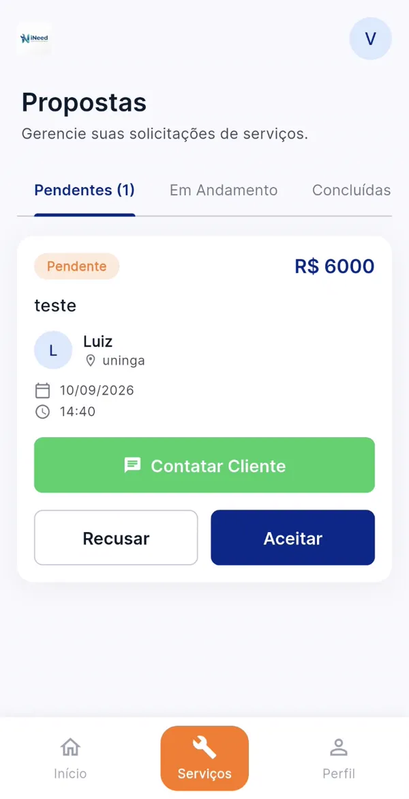
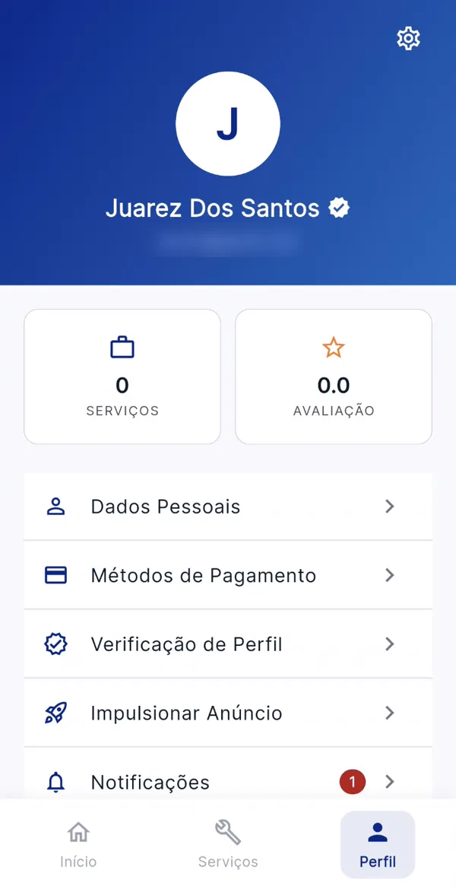

Uma conta, os dois lados do serviço
Quem contrata e quem trabalha usam o mesmo app. Se você faz os dois, troca de perfil pelo menu sem sair da conta.
-
Encontre o profissional
Filtre por especialidade e preço. Cada card mostra o valor por hora, a nota das avaliações e o selo de quem é verificado.
-
Envie a proposta
Título, descrição, data, horário e endereço. O valor é o valor por hora que o prestador cadastrou, sem surpresa.
-
Acompanhe cada etapa
O app avisa quando o pedido muda de status, e o WhatsApp do prestador fica a um toque, com mensagem pronta.
-
Avalie o serviço
Estrelas, elogios rápidos e um comentário. A avaliação vai para o perfil público e ajuda o próximo cliente a decidir.
Meus pedidos
img/telas/pedidos-cliente.webp-
Monte seu anúncio
Especialidade, valor por hora e uma bio curta. Trabalha com mais de uma coisa? Use a categoria Faz tudo.
-
Aceite ou recuse propostas
Você vê título, descrição, data, horário e endereço antes de decidir. Ninguém agenda nada sem o seu aceite.
-
Defina como quer receber
Cadastre sua chave Pix e as formas que aceita: dinheiro, Pix, cartão ou todas. O pagamento é combinado direto com o cliente.
-
Ganhe avaliações e o selo
Cada serviço concluído pode virar uma avaliação real no seu perfil. Envie seus documentos e mostre o selo de verificado ao lado do nome.

Propostas do prestador
img/telas/propostas-prestador.webpPara o serviço que não dá para adiar
- Eletricista
- Encanador
- Pintura
- Faxina
Também tem Beleza Jardinagem Montagem Mudança Faz tudo
O selo de verificado não é automático
Uma pessoa da equipe iNeed confere os documentos de cada prestador antes de aprovar. Na dúvida, a resposta é não, sempre com o motivo.
- O prestador envia
- Foto de um documento com foto (RG ou CNH) e de um comprovante de qualificação, como certificado, diploma ou registro profissional.
- A equipe confere
- Item por item, no painel de validação. Sem os quatro itens conferidos, não tem aprovação.
- O selo aparece
- Ao lado do nome na busca, na home e no perfil público. Se o envio for recusado, o prestador vê o motivo no app e pode mandar de novo.
O selo confirma identidade e qualificação. Ele não substitui combinar bem o serviço e avaliar no final. Os documentos só são vistos pela equipe de validação e são apagados se a conta for excluída.

Perfil do prestador com selo
img/telas/perfil-prestador.webpChecklist da análise
- O nome do documento confere com o cadastro
- O documento está legível e é válido
- O comprovante é da especialidade anunciada
- O comprovante está no nome do prestador
Aprovado: selo liberado
Baixe e instale no Android
Beta
Baixar o APKO arquivo fica no GitHub Releases do projeto. Ele é grande, então prefira baixar no Wi-Fi. Por enquanto não há versão para iPhone.
O Android pede uma permissão extra para qualquer app que não vem da Play Store. É uma proteção do sistema, não um sinal de vírus. Por isso, baixe o iNeed só por este site.
-
Baixe o arquivo
Toque em Baixar o APK. O
ineed.apkvai para a pasta Downloads. Se o navegador perguntar, confirme o download. -
Permita a instalação pelo navegador
Ao abrir o arquivo, o Android avisa que a instalação está bloqueada. Toque em Configurações e ative Permitir desta fonte para o navegador que você usou, como o Chrome. Depois volte.
-
Abra o APK
Pela notificação do download ou pelo app Arquivos, na pasta Downloads, toque em
ineed.apk. -
Instale
Toque em Instalar e depois em Abrir. Se o Play Protect disser que não reconhece o app, toque em Mais detalhes e em Instalar mesmo assim.
Perguntas frequentes
O iNeed é grátis?
Sim. Baixar, criar conta, contratar e anunciar não custa nada. O iNeed não cobra taxa e não passa o pagamento pelo app: você paga direto ao prestador, pela forma que ele aceita (dinheiro, Pix ou cartão). No futuro, o prestador vai poder pagar, se quiser, para destacar o anúncio na busca.
É seguro instalar fora da Play Store?
O aviso do Android aparece para qualquer app instalado por APK. O código do iNeed é público no GitHub, e o arquivo é publicado pela própria equipe no GitHub Releases. Baixe só pelo botão deste site e não instale cópias enviadas por outras pessoas.
Tem para iPhone?
Ainda não. Nesta fase Beta o iNeed existe só para Android. A versão para as lojas, incluindo iOS, está no planejamento, sem data definida.
Como viro prestador?
No cadastro, escolha ser prestador e informe especialidade, valor por hora e uma bio. Se você já usa o app como cliente, vá em Perfil > Trocar de Perfil, escolha prestador e complete os dados. Para ganhar o selo, abra Perfil > Verificação de Perfil e envie a foto de um documento com foto e de um comprovante de qualificação.
Como atualizo para uma versão nova?
Baixe o APK de novo por este site e instale por cima. Se o Android mostrar "App não instalado", desinstale a versão anterior e instale a nova. Sua conta e seus pedidos ficam no servidor, então basta entrar de novo.
Por que o app demorou para abrir?
Nesta fase o servidor do iNeed roda num plano gratuito que "dorme" depois de uns 15 minutos sem uso. O primeiro acesso depois disso pode levar perto de um minuto. Depois fica normal.